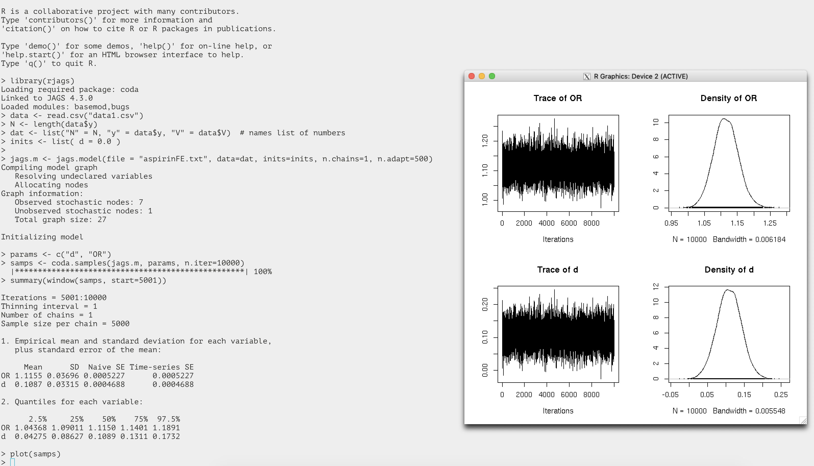

Some packages and other information
rstan
The example here follows that in RStan Getting Started. To test rstan on the HPCC, first load R 3.6.2:
1 2 | |
As of February 2020, the rstan version is 2.19.2.
The stan model file "8schools.stan" contains:
1 2 3 4 5 6 7 8 9 10 11 12 13 14 15 16 17 | |
The R code ("run.R") to run stan model contains:
1 2 3 4 5 6 7 8 9 10 11 12 | |
To run the model from the command line:
Rscript run.R
In addition to the results printed to the stdout, there is an R object file named 8schools.rds generated. This is due to that we've set auto_write to TRUE in run.R. More about the auto_write option:
Logical, defaulting to the value of rstan_options("auto_write"), indicating whether to write the object to the hard disk using saveRDS. Although this argument is FALSE by default, we recommend calling rstan_options("auto_write" = TRUE) in order to avoid unnecessary recompilations. If file is supplied and its dirname is writable, then the object will be written to that same directory, substituting a .rds extension for the .stan extension. Otherwise, the object will be written to the tempdir.
rjags
To use {rjags}, first load R/3.5.1 and JAGS from a dev-node (dev-intel16 or dev-intel18) as follows:
Loading R/3.5.1 and JAGS
1 2 3 | |
Next, we will run a short example of data analysis using rjags. This example comes from this tutorial which presents many Bayesian models using this package.
To invoke R from the command line: R --vanilla
Then, in the R console, you can run the following codes (for detailed explanation refer to the tutorial mentioned above):
Sample R code using {rjags} commands
1 2 3 4 5 6 7 8 9 10 11 | |
where the two input files, data1.csv and aspirinFE.txt, need to be located in the working directory. The content of the two files is below.
data1.csv
1 2 3 4 5 6 7 8 | |
aspirinFE.txt
1 2 3 4 5 6 7 8 9 10 11 12 13 14 | |
A screen shot of the entire run including the output figures is attached here. 
R2OpenBUGS
R package R2OpenBUGS is available on the HPCC.
OpenBUGS is a software package that performs Bayesian inference Using Gibbs Sampling. The latest version of OpenBUGS on the HPCC is 3.2.3. R2OpenBUGS is an R package that allows users to run OpenBUGS from R.
To load R and OpenBUGS, run:
1 2 3 | |
Then, in your R session, use "library(R2OpenBUGS)" to load this package. You can execute the following testing R code to see if it works for you.
Testing R2OpenBUGS
1 2 3 4 5 6 7 8 9 10 11 12 13 14 15 16 17 18 19 20 21 22 23 24 25 26 27 28 29 30 31 32 33 34 35 36 37 38 39 40 41 42 43 | |
R interface to TensorFlow/Keras
Prerequisites
In order to run TF/keras from within R, we need to
0. Login to a GPU node: ssh dev-intel16-k80
1. Install Tensorflow as the backend of running keras – local install by user
2. Install R library {tensorflow} and {keras} – local install by user
We show here how to install R TF libraries in one's home directory, after loading the system-wide R (version 3.5.1 at the time of writing).
We don't show here how to install TF; it's included in another wiki
All the paths presented below should be replaced by your own paths.
Installing R libraries
As mentioned above, we will install the two TF libraries in your home
directory. Let's say you have an existing directory named ~/Rlibs
(create one if you don't), the installation would go as follows:
Install R libraries in your home dir
1 2 3 4 5 6 7 8 9 | |
A deep learning example
Now let's try out a deep learning analysis (classifying MNIST handwritten digits using Multi-Layer Perceptrons) with code available from here. For convenience, the code is pasted below; you can run it either by opening an R console or saving the code to an R script so that you can run the script on the command line.
Here are some important things to note:
(1) Before executing the R code, you need to set up a couple of conda related environment variables. That is,
1 2 3 | |
(2) As you may have noted in the R code below, running TF within R requires some configurations (line 3 and line 4) so that R knows where to find your TF conda environment.
(3) Tip: while the code is running, you can start a new HPCC login
session and, after running ssh dev-intel16-k80, type the command
gpustat -cpuP. You should be able to see your GPU processes (R
processes in this case).
R code for deep learning
1 2 3 4 5 6 7 8 9 10 11 12 13 14 15 16 17 18 19 20 21 22 23 24 25 26 27 28 29 30 31 32 33 34 35 36 37 38 39 40 41 42 43 44 45 46 47 48 49 50 | |
R 3.5.1 with Intel MKL
Intel MKL can accelerate R's speed in linear algebra calculations (such as cross-product, matrix decomposition, inverse computation, linear regression and etc.) by providing BLAS with higher performance. On the HPCC, only 3.5.1 has been built by linking to Intel MKL.
Loading R
Loading R 3.5.1 built w/ OpenBLAS
1 2 | |
Loading R 3.5.1 built w/ MKL
1 2 | |
You could double check the BLAS/LAPACK libraries linked by running sessionInfo() in R.
Benchmarking
We have a simple R code, crossprod.R, for testing the computation
time. The code is below, where the function crossprod can run in a
multi-threaded mode implemented by OpenMP.
crossprod.R
1 2 3 4 5 | |
Now, open an interactive SLURM job session by requesting 4 cores:
Benchmarking OpenBLAS vs. MKL (multi-threads)
1 2 3 4 5 6 7 8 9 10 11 12 13 14 15 16 17 18 19 20 | |
Above, the boost in speed is clear from using MKL as compared with OpenBLAS.
Even if we use a single thread (by requesting one core), MKL still shows some advantage.
Benchmarking OpenBLAS vs. MKL (single-thread)
1 2 3 4 5 6 7 8 9 10 11 12 13 14 15 16 17 18 19 20 | |
Notes
When loading R, the OpenMP environment variable OMP_NUM_THREADS is left unset. This means that when running R code directly on a dev-node, all CPUs on that node will be used by the internal multithreading library compiled into R. This is discouraged since the node will be overloaded and your job may even fail. Therefore, please set OMP_NUM_THREADS to a proper value before running the R code. For example,
$ OMP_NUM_THREADS=4
$ Rscript --vanilla crossprod.R
On the other hand, when the code is run on a compute node allocated by SLURM, you don’t need to set OMP_NUM_THREADS as R would automatically detect CPUs available for use (which should have been requested in your salloc command or sbatch script).
Created: September 13, 2022